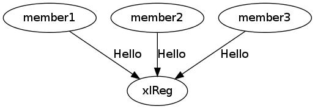

xlReg Cluster Registry
As the term is used here, an xLattice registry is a protocol for communicating between parties in a traditional server/client relationship. On the one hand we have independent xLattice nodes which may cooperate as an xLattice cluster, a collection of peers that communicate with one another over links dedicated to this purpose. On the other hand we have a single xlReg server which is identified by its NodeID (a 20- or 32-byte value). The server has a well-known address, a tcp/ip port in an address region (an overlay ), accessible to the nodes wishing to form the cluster. The xlReg server also has two well-known RSA public keys, one (ck) for use in encrypting data and the other (sk) for use in creating digital signatures.
Clients join a cluster by sending a Hello message to the server to agree
on communications and then send an encrypted Join message with their
details.

The Hello is encrypted using the server’s RSA public key. It contains a
salt (salt1), a requested version number, and an AES IV and key (keyIV)
used only to encrypt the reply, the HelloReply. This iv+key is created by
the client and used once and once only by the server.
The HelloReply contains the original salt, another salt (salt2), the
protocol version to be used, and the AES IV and key (keyIV2) used for
the rest of the session. By deciphering the first salt, the server has
proved its identity - that is, it has proved that it has the secret RSA
key corresponding to the public key. If the Hello is in some way ill-formed,
the server will silently close the connection. The client will do the same
if the HelloReply is not properly encrypted using keyIV or does not contain
the correct value for the salt. From this point keyIV2 is used by both sides
to encrypt session traffic.
The version number is currently ignored. The expectation is that
at some point the version number in the Hello will be that requested by
the client and the version number in the reply will be that actually used
by the server.

In the next step the client sends a Client message with either a proposed
clientName and a token or a clientID and salt2 from the HelloReply. In the
first case the token will contain, among other things, a proposed
Attrs bit string. In either case the message is signed using the
client’s public key for signatures. The server replies with a ClientOK
message or an error message. The ClientOK contains a possibly
uniquified clientName, the actual clientID, and a possibly modified Attrs
bit string, the value that the server will use from this point forward.
At this point the client can send either a Create message, a Join, a
Get, or a Bye.
The Create message contains a cluster name and client-proposed size.
The server returns a Create reply which contains the cluster ID, its
possibly uniquified name, and its actual size. If the cluster did
not previously exist, this message will create it with the size proposed,
but constrained to be in the range 2 .. 64 inclusive. If the cluster
already exists, the proposed size is ignored.
A Create can be used simply to get the clusterID and size of an existing
cluster.
The cluster size is the maximum number of clients that will be allowed to join the cluster. It does not change as members join.
The Join message contains a clusterName or ID. The server returns
either clusterID and size or an error message.
A Get message may contain a clusterID or a Which field, which indicates
which member descriptions (tokens) are requested. The server will
return either an error message or a Members message containing a
clusterID, a Which field identifying the members whose information
follows, and a list (an array) of member tokens.
If the clusterID is not present, the server will assume the ID associated
with any previous Create or Join.

If the Which field is present, the server will return tokens for the Nth
member wherever bit N is set in Which. If Which is absent, the server
will act as though all possible Which bits are set. In any case, the
server will return a token wherever the corresponding member has been
defined, and then will return a Which value indicating which tokens are
present.
The first token in the Members message will correspond to the lowest bit
set, any second bit to the second lowest bit, and so forth. If no one
has joined the cluster or none of the selected members is as yet defined,
the Which field will be zero.
Clients can make any number of Get requests. The normal behavior will
be to poll until the client has tokens for all cluster members.
Alternatively the client can close the connection and return later.
The client ends a session by sending Bye to the server. The server
replies with an Ack and closes the connection.
Error messages from the server contain a string describing the problem. The server will send the message and then close the connection without waiting for a reply.
Look here for a more detailed description of the xlReg protocol.